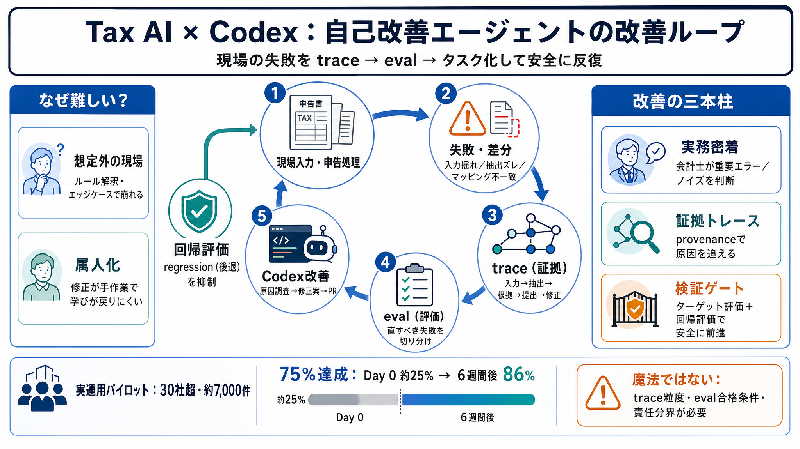

Failure
入力の揺れ、抽出のズレ、マッピング不一致、エッジケース

自己改善エージェント
Tax AI を Codex で「自己改善」に近づける鍵は、モデルを良くするだけでなく、 現場の失敗を trace→eval→開発タスクへ変換する改善ループです。
現場の修正（会計士）を“学習信号”として工程に組み込み、検証可能な形で反復します。
失敗は想定外
実運用では AI が想定しない入力・差分・ルール解釈が起き、性能が一時的に悪化することがあります。 従来はエンジニアが手作業で直しがちで、改善が遅くなります。
手直し→回路
自己改善の中心は「モデル改善」ではなく「改善ループの設計」です。 失敗を証拠（trace）として構造化し、評価（eval）と開発タスクへ落とし込みます。
実運用で検証
Crete のネットワーク参加 30社超でパイロットを行い、シーズン中に約 7,000件の申告処理を実施しました。 1040/1041 の作成を多くの時間で自動化し、数か月で性能向上が示されています。
“改善”が見える
申告書フィールドの正しさを「75%/90%/100%が正しい割合」で測ると、ローンチ直後は75%達成が約4分の1でした。 その後、6週間で 86%が「75%達成」を満たし、成長は継続したと説明されています。
改善の骨格
改善を可能にした中核は3本柱です。実務者の直感、プロダクトトレース、Codex 主導の改善ループがセットで機能します。
直すべき／直さない
差分があっても、それが抽出ミスなのか、マッピング問題なのか、ルールや前年度引き継ぎの差なのかは自動では判断しにくいです。 会計士が「直すべき失敗」だけを学習対象に昇格させます。
根拠つき調査
抽出・分類・マッピング・提出までの道筋を保持すると、どこで失敗が起きたかを特定できます。 賃貸不動産の例では、フィールド差分を作り関連失敗をグルーピングし、evalターゲットへ変換すると説明されています。
検証ゲート
Codex は trace と eval、リポジトリや skills を参照し、原因候補を切り分けて修正案を作り、ターゲット評価と回帰評価で検証します。 その後 PR で提示する流れが示されています。
属人改善を排除
この設計では、改善が「感覚的な対応」ではなく、成功条件が明確で検証可能な開発タスクへ落ちます。 そのため改善の速度と安全性を両立しやすいと説明されています。
詳細は未提示
記事は設計思想とプロセスを中心に説明しており、失敗モードの内訳、各数値の粒度、安全策やコンプライアンス検証の詳細は十分に提示されていません。 再現には trace の粒度、eval の合格基準、セーフティと責任分界が同程度に必要です。
要点まとめ
Tax AI は「会計士の修正・運用ログ・評価基盤」を結び、Codex 主導の反復ループで継続的に精度を高めることで、 自己改善する税務エージェントに近づけます。
No references found